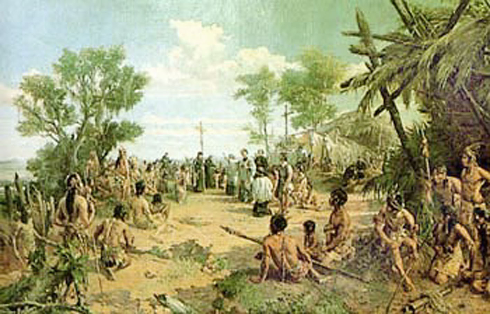
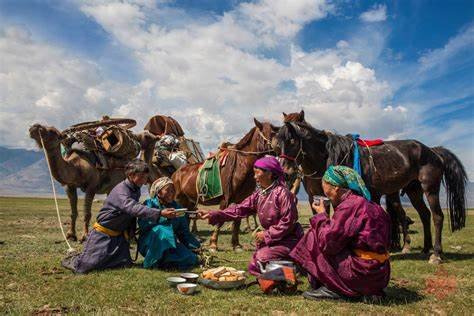
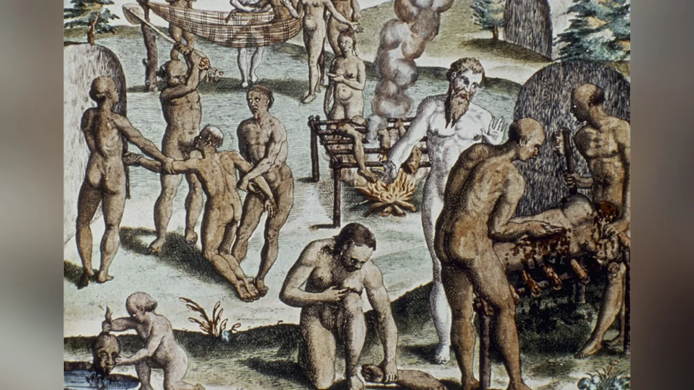
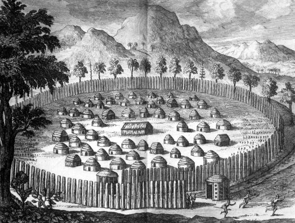

Um acidente fatal a fez soçobrar pouco depois de zarpar de Salvador. Os que escaparam ao naufrágio — e foram muitos — acabaram capturados e devorados pelos ferozes índios caetés, na margem esquerda do rio São Miguel, ainda hoje indicada graças à crença popular. Eis um acontecimento característico do estado dos índios brasileiros por ocasião da chegada dos nossos primeiros colonizadores e missionários. Para darmos uma ideia da mudança ocasionada pelo influxo do Cristianismo e da civilização, apresentaremos, neste primeiro artigo de uma série de três, um quadro geral da situação em que se encontravam os aborígines na época do descobrimento do Brasil..
Nomadismo e promiscuidade
alvez a maior descoberta dos portugueses ao desembarcarem em nossas terras tenha sido os próprios índios, um tipo humano ainda não conhecido pelos lusos em nenhuma parte do mundo. A única ciência dos indígenas era a floresta. O objetivo de suas vidas era comer, beber, caçar, combater e matar… As aldeias que construíram — as tabas duravam no máximo quatro anos: as madeiras apodreciam, as palmas dos tetos de suas ocas já não os cobriam e toda a caça da redondeza estava exterminada.
Se alguma tribo se dedicava precariamente à agricultura, as terras cultiváveis estavam cansadas, o que obrigava os silvícolas a se mudarem de local. Além de predadores da natureza, nossos índios, com seus costumes nômades, jamais conheceram qualquer tipo de desenvolvimento.
Os laços sociais que os uniam eram de tal maneira frouxos que essas pequenas tribos se fracionavam cada dia mais. As constantes guerras de extermínio entre elas constituíam motivo para que se debilitassem e diminuíssem em número. Nessas pobres almas predominava o instinto de vingança. Iniciadas as rixas que eram transmitidas de pais para filhos, não se poderia esperar nenhum sentimento de abnegação em favor do interesse comum e tampouco da posteridade. Ao contrário de certas visões idílicas que alguns autores indigenistas procuram dar à vida tribal, ela se caracteriza pela mais completa promiscuidade, causadora de todas as espécies de doenças e vícios morais.
Índios canibais
Eram seres humanos inteiramente rudimentares, ferozes, astutos, mentirosos e traiçoeiros. E, além do mais, eram canibais. As cerimônias de matanças públicas serviam de pretexto para festas e ajuntamentos. Daí a denominação de “antropofagia ritual” que lhes deram. Os aborígines comiam seus inimigos por vingança. Suas expedições guerreiras tinham também como fim proverem-se de carne humana.
Durante os combates, os índios visavam sobretudo à captura de prisioneiros. Após uma luta preliminar, os guerreiros de ambos os lados precipitavam-se uns contra os outros, esforçando-se para desarmar o adversário e aprisioná-lo vivo. Os mortos e feridos no campo de batalha eram dizimados e devorados imediatamente, levando-se também diversas partes assadas para casa. A expedição vitoriosa fazia uma entrada triunfal em todas as tabas aliadas, ao longo do caminho. Ao chegar à aldeia de origem, as tropas obrigavam o prisioneiro a gritar: eu, vossa comida, cheguei!
Nenhum deles podia escapar ao sacrifício ritual para o qual era destinado. Caso adoecesse, os indígenas levavam-no mata adentro e partiam-lhe o crânio, deixando o cadáver insepulto. A duração do cativeiro variava muito, pois os velhos eram mortos sempre no retomo da expedição, enquanto os jovens poderiam manter-se cativos por vários meses, até anos. Marcada a data da execução, todos os vizinhos e aliados eram convidados a tomar parte no festim. Passavam a noite precedente, num simulacro de vigília, a dançar, cantar e beber.
Antropofagia doméstica
Algumas tribos comiam por culto membros de sua família que faleciam, dando-lhes, como pensavam, um digno sepultamento em seus próprios estômagos. Nas tribos que praticavam a antropofagia era freqüente encontrar esse canibalismo doméstico, mágico ou participativo. Ele procede da crença de que, pela ingestão das carnes de um indivíduo, dá-se a mais íntima união possível com ele, e por conseguinte, a participação em suas qualidades: coragem, vigor, destreza etc. Daí os banquetes sagrados em que eram comidos, em festividades solenes, os personagens tidos como superiores: o cacique, o pajé, os guerreiros ou heróis, freqüentemente pessoas da própria tribo.
Assim, a fim de se revestirem das qualidades desejadas de seus antepassados, surgiu em várias tribos o costume de ingerir-lhes, em rituais fúnebres, as cinzas com bebidas especiais. Um mês após o funeral do familiar, desenterravam seu cadáver, já em adiantadíssimo estado de putrefação, e o colocavam em uma grande panela sobre o fogo, até que lhe extinguissem as partes moles. Os odores fétidos exalados durante o ato completavam aquele ritual macabro. Quando os ossos ficavam carbonizados, eram triturados e reduzidos a pó. Este, por sua vez, era colocado em grandes cuias de madeira cheias de bebidas. Todo o grupo presente bebia então esta mistura até a última gota, crendo que as virtudes do morto haviam se transmitido a todas as pessoas que a ingeriam.
Fundação dos aldeamentos
Foi esse o sinistro panorama encontrado pelos primeiros missionários que para cá vieram, com a intenção de iniciar a catequese desses silvícolas e implantar a civilização cristã em nossa pátria.
Segundo estimativas geralmente aceitas, na época do Descobrimento, o Brasil contaria com cerca de cinco milhões de índios. O grande mérito de Portugal foi transformar a catequese na base de sua obra colonizadora. “Contudo, o melhor que dela se pode tirar parece-me que será salvar esta gente. E esta deve ser a principal semente que Vossa Alteza em ela deve lançar”, escreveu Pero Vaz de Caminha a el-Rei de Portugal, Dom Manuel, narrando a descoberta da Terra de Vera Cruz.
